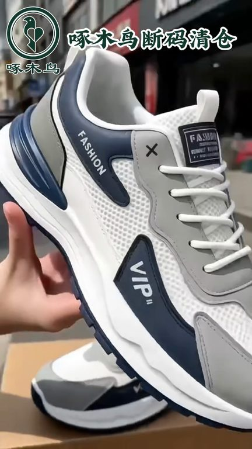
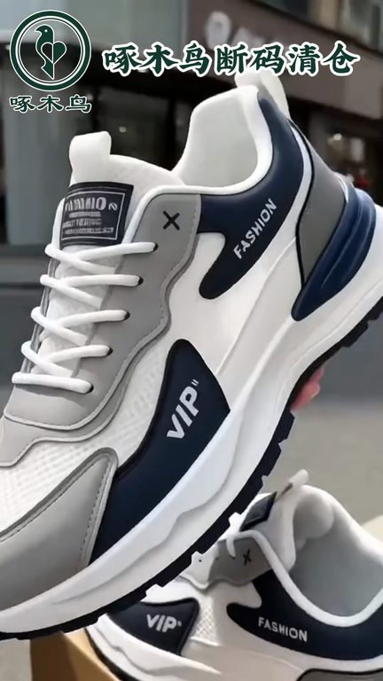
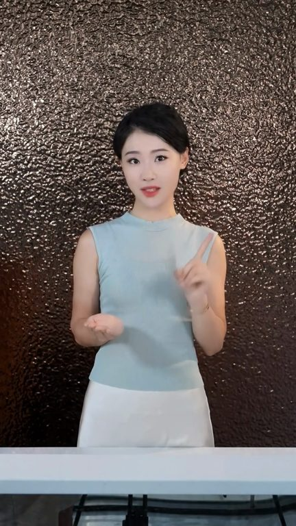
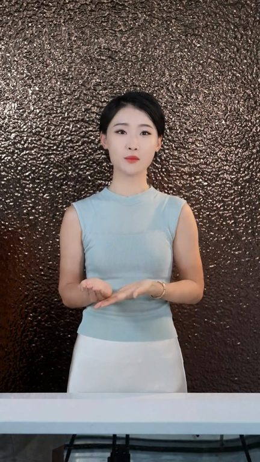

TOP 1 · 代表素材深度拆解
核心放量 稳健
视频为原始素材 HTTPS 链接；点击后加载，建议在网络环境良好时播放。
28.3万素材消耗
2.80%CTR
67.9%类目消耗占比
+0.54pp较类目均值
表现判断
该素材是类目内第 1 名，属于“核心放量”；CTR 高于类目均值。消耗体现承接规模，CTR 体现首屏与定向效率，两项应结合判断，不能仅以单指标下结论。
表达标签
口播三段式证据
开场钩子老公请下单老婆来给你省钱啦这双鞋我也相声了给我也弄一双啊对不起就剩男似的商场撤贵了啊你们点开我这个链接看看才多少钱真的便宜到我都不敢相信了并且这个价格有云飞鞋
中段论证你出门登上就走了啊特别方便然后鞋面还是这种皮面和网面的拼接脏了擦一擦就干净了啊特别好打理然后内里鞋垫还是这种带透气网眼的夏天穿还透气呢就品质这么好的鞋这个你们看到就赶紧整啊这活动可不是天天有疯了疯了踩这个架就给我老公抢到了卓木鸟品牌的透气休闲板鞋你看这多色皮面的拼接啊就特别的上档次他就是既有凉鞋的凉爽透气又有板鞋的休闲百搭就添热了无论是搭个短裤还是长裤就可洋…
结尾转化专贵同款入手很划算现货库存有限热门尺码走得快看众别犹豫直接点开小黄车选码下单收到货觉得不合脚不满意都可以正常售后购物完全放心品牌好货价格不常有想要一双耐穿又体面的鞋子抓紧时间下单所库存
有效点
- CTR 2.80% 高于类目均值 2.26%，开场或人群指向具备点击优势
- 口播包含明确到手机制或直播间指令，转化路径较完整
迭代动作
- 保留当前高效钩子，复制 3 个变量版本：人物、首句和首帧分别单变量测试
- 视频时长偏长，建议剪出 30–45 秒短版，仅保留钩子、两项证据和一次 CTA
- 促销口径与资质信息保持同屏可验证，结尾只保留一个明确行动指令
合规关注

钩子建立 · 5.7s

场景/问题展开 · 43.3s

卖点证据 · 99.6s

转化收口 · 137.1s
查看完整口播摘要
老公请下单老婆来给你省钱啦这双鞋我也相声了给我也弄一双啊对不起就剩男似的商场撤贵了啊你们点开我这个链接看看才多少钱真的便宜到我都不敢相信了并且这个价格有云飞鞋我要早知道卓木鸟的板鞋才这个价就不会给我老公穿的杂牌鞋了还是卓木鸟专卖店发货的啊你看你这侧面全是透气网眼这夏天穿着比凉鞋百搭比普通板鞋还要透气凉快而且你看人这配色啊可洋气了夏天不管搭牛仔裤还是短裤穿都特别帅主要他这鞋比其他板鞋软和多了平时不管是登山还是跑步穿着一点不累脚还是免计鞋带的设计你出门登上就走了啊特别方便然后鞋面还是这种皮面和网面的拼接脏了擦一擦就干净了啊特别好打理然后内里鞋垫还是这种带透气网眼的夏天穿还透气呢就品质这么好的鞋这个你们看到就赶紧整啊这活动可不是天天有疯了疯了踩这个架就给我老公抢到了卓木鸟品牌的透气休闲板鞋你看这多色皮面的拼接啊就特别的上档次他就是既有凉鞋的凉爽透气又有板鞋的休闲百搭就添热了无论是搭个短裤还是长裤就可洋气了主要这种品牌鞋无论我是拧麻花还是打对折你看他都能一秒回弹而且哪儿哪儿都是软软单单的加上这加厚的底啊一天你就是抱走三万步真的都不带累脚的而且还是这种防水的皮面脏了又好打理而且还是这种加密纹路的橡胶防滑大底啊抓地力又贼响关键连卓木鸟的品牌鞋这么便宜咱真没必要去给老公老爸穿杂牌了各位大哥家人们经典老牌子卓木鸟男鞋来了品质大家都信得过款式简约大气商务休闲都能搭日常出门上班通勤走亲房友穿都体面上脚脚感舒适走路轻盈自在长时间走动也不会觉得累板型合脚不急脚不磨脚日常穿着省心又百搭今天给到专属实惠价专贵同款入手很划算现货库存有限热门尺码走得快看众别犹豫直接点开小黄车选码下单收到货觉得不合脚不满意都可以正常售后购物完全放心品牌好货价格不常有想要一双耐穿又体面的鞋子抓紧时间下单所库存